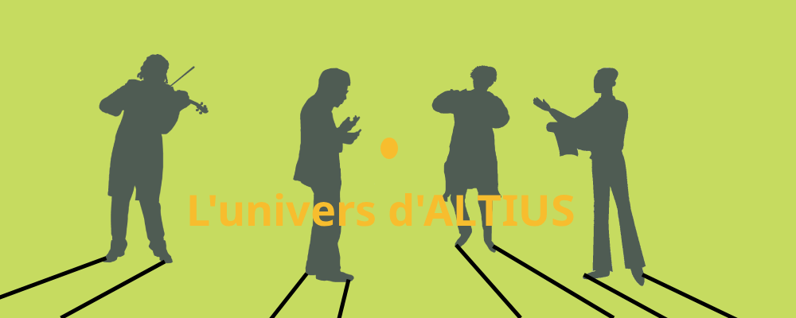
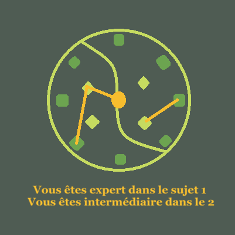
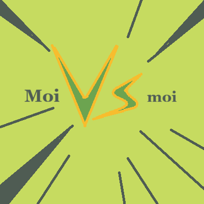
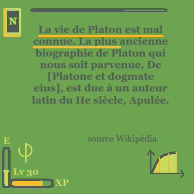
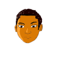
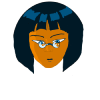
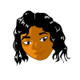
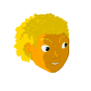
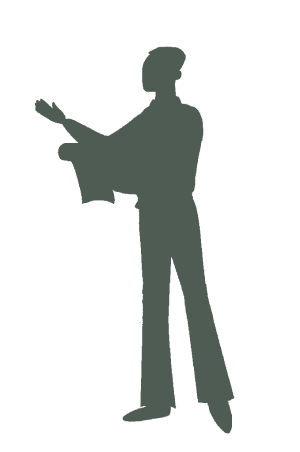

Mot sélectionné
—
← → naviguer · M mot · Espace phrase
Texte préparé d'après « Philosophie » sur Wikipédia (CC BY-SA).



Devenez plus fort ! Plus vous pratiquez, meilleur vous serez.

Votre plaisir est garanti !

Remportez la victoire sur votre paresse.
Leo, le spécialiste du langage, utilise un cahier et une feuille comme armes.





Explorez « Philosophie » mot après mot, conservez vos découvertes et développez votre endurance de lecture.
← → naviguer · M mot · Espace phrase
Texte préparé d'après « Philosophie » sur Wikipédia (CC BY-SA).